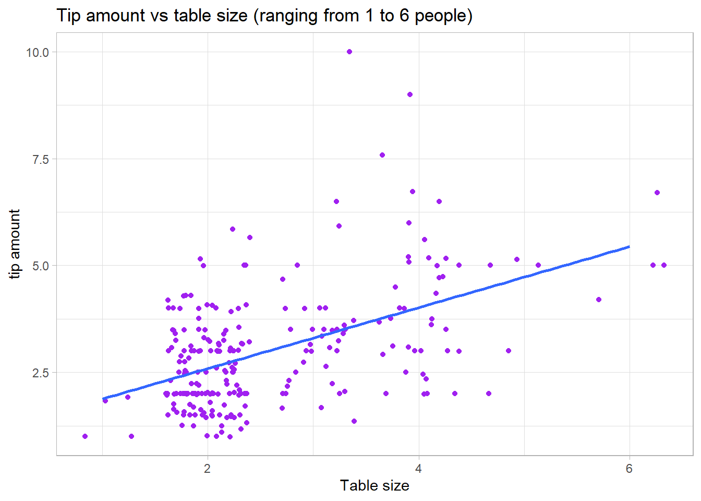
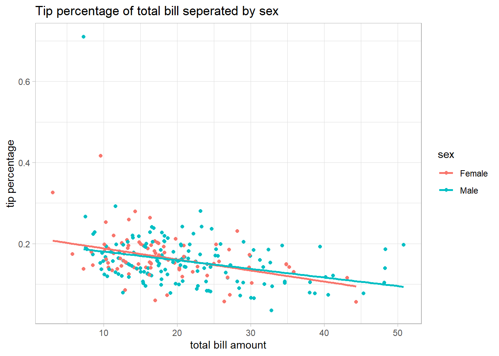

library(here)
library(readr)
library(dplyr)
library(ggplot2)
library(rsample)
library(tidyclust)
library(tidymodels)
library(tidyr)
library(GGally)The customer is always…a random variable
Summary
The main objective of this analysis is to determine if there are any patterns based on restaurant behavior expressed in this data set. Exploratory Data Analysis was first used to obtain insight about the tips variable and its relationship to other variables in this data set and identify any patterns of tipping behavior which may be altered based on bill size or gender. K means clustering was then used to determine which variables in the data set would create natural groupings between the observations. Overall we identified some negative linear patterns between tip percentage and total bill and identified that spending habits were a driving factor for our K clusters.
Motivation and Context
As someone who’s worked in the restuarant industry for several years i have identified patterns based on individual experiences. Most notably tipping tends to rely on a percentage of the total bill. Larger table sizes tend to have larger bill sizes and thus larger tips. And anecdotally men in particular tend to tip more than woman. In this analysis we wish to explore the merit behind my own individual biases and explore notable dining patterns expressed in the “Tips” data set.
Packages Used In This Analysis
You should follow the template table below. Each row of the table contains the package name in brackets, a link to the package website, and (on the right side) a description of what you used the package for. If you can’t find a link to the package website, or you’re having trouble getting the link to work, don’t worry about including it.
| Package | Use |
|---|---|
| here | to easily load and save data |
| readr | to import the CSV file data |
| dplyr | to massage and summarize data |
| rsample | to split data into training and test sets |
| ggplot2 | to create nice-looking and informative graphs |
| [GGally] | to extend ggplot2 to include pairwise plot matrices |
| [tidyclust] | to provide a tidy, unified interface to clustering models |
| [tidyr] | to transform data into a tidy format |
| [tidymodels] | to install the meta-package that loads a collection of packages for the tidyverse |
| [tibble] | to make data frames more consistent and readable |
| [yardstick] | to meausre model performance across classification and regression |
| [parsnip] | to provide a consistent interface for for building and fitting models |
| [tune] | to validate model hyperparameters |
| [rsample] | to create and analyze boostrapping and cross validation |
Data Description
The “Tips” data set contains 244 observations from a restaurant by one server over a span of several months. The data contains 7 variables: sex, table size, bill total, tip amount, time of day, if they were a smoker, and day (Friday, Saturday or Sunday).
tips <- read.csv("tips.csv")
#split into training and test set
set.seed(123)
# 80/20 train and test sets
tips_split <- initial_split(tips, prop = 0.80, strata = tip)
tips_train <- training(tips_split)
tips_test <- testing(tips_split)Exploratory Data Analysis
#examining the "tip" (in dollars) variable
mean_tip <- mean(tips$tip)
median_tip <- median(tips$tip)
sd_tip <- sd(tips$tip)
max_tip <- max(tips$tip)
min_tip <- min(tips$tip)
quart_tip <- quantile(tips$tip)
#histogram of tips
ggplot(data=tips,aes(x=tip)) +geom_histogram(fill="lightgreen") + theme_light() + labs(x="Tip amount",title = "Distribution of tips variable")`stat_bin()` using `bins = 30`. Pick better value `binwidth`.
#examining table "size" (number of people at a table) variable
mean_size <- mean(tips$size)
median_size <- median(tips$size)
sd_size <- sd(tips$size)
max_size <- max(tips$size)
min_size <- min(tips$size)
quart_size <- quantile(tips$size)
#histogram showing the table sizes captured in the data set
ggplot(data=tips,aes(x=factor(size))) +geom_bar(fill="lightblue") + theme_light() + labs(x="Table size(ranging 1-6 people)",y=" Number of tables of that table size",title = "Distribution of table size variable")
When looking at the raw data, the “tip” variable ranges from $1 to $10 with the bulk of the data lying between $1-$5,the histogram of the distribution shows it is skewed right and the majority of tips were around $2. The average tip was about $2.99 and the median tip was $2.90. Showing that the average was slightly dragged higher due to the outlier $9 and $10 tips.
When looking at the “size” variable, referring to table size, the minimum recorded was 1 person and the maximum was 6 people. The average table size was numerically recorded as 2.56 but looking at this logically we can refer to it as a range between 2 and 3 people. The median table size was 2 people and the distribution is also slightly skewed right with 1,5, and 6 having the least recorded occurrences and 2 having the most and 3 and 4 having equal occurrences.
#tip % vs total bill amount
ggplot(data=tips, aes(x=total_bill,y=tip/total_bill)) + geom_point(color="red") + geom_smooth(method="lm",se=FALSE) + theme_light() + labs(x="bill total", y="tip percentage", title = "Tip percentage vs total bill amount") `geom_smooth()` using formula = 'y ~ x'
#tip vs table size
ggplot(data=tips,aes(x=size,y=tip)) +geom_jitter(color="purple")+ geom_smooth(method="lm",se=FALSE) + theme_light() + labs(x="Table size",y="tip amount", title = "Tip amount vs table size (ranging from 1 to 6 people)")`geom_smooth()` using formula = 'y ~ x'
After exploring into the “tip” variable we wanted to see if the tip shows a relationship between total bill amount or table size. The plot showing tip percentage vs the total bill shows us a slightly negative linear relationship. The scatter plot and regression line show that as the bill gets larger customers tend to tip a lower percentage. When the bill is lower, about $10-$20, tip percentage hovers around 15-20% but as the bill gets larger the variance of the tips increases and overall declines. There are some notable points that have a tip percentage greater than 30% and all of those occur when the bill is $10 or less. The scatter plot showing tip amount vs table size followed a slightly positive linear relationship. With most of the points concentrated around a table size of 2 people. This plot follows a relationship we expected to see, overall the expectation was that a larger group would have a larger total bill and by default a larger tip. This is the overall trend for this case however it is worth noting that the largest table size did not produce the largest tip. The largest tip was recorded from table sizes 3 and 4, this did not follow the expectation but highlights the variability around tipping.
ggplot(tips, aes(x = total_bill, y = tip/total_bill, color = sex)) + geom_point() + geom_smooth(method = "lm", se = FALSE) + labs(x="total bill amount", y="tip percentage", title = "Tip percentage of total bill seperated by sex") + theme_light()`geom_smooth()` using formula = 'y ~ x'
Modeling
Unsupervised Learning
#k means clustering using tidy models
kmeans_model <- k_means(num_clusters=tune()) |>
set_args(nstart=20)
kmeans_recipe <- recipe(
~ total_bill+tip+sex+smoker+day+time+size,data=tips) |>
step_dummy(sex,smoker,day,time)|> #because of categorical variables
step_normalize(all_predictors()) #scales our numerical predictors
kmeans_wflow <- workflow() |>
add_model(kmeans_model) |>
add_recipe(kmeans_recipe)
#5 fold cross validation
set.seed(123)
kmeans_kfold <- vfold_cv(
data=tips_train,
v=5,repeats=1
)
nclusters_grid <- data.frame(num_clusters = seq(1,10))
kmeans_tuned <- tune_cluster(
kmeans_wflow,
resamples = kmeans_kfold,
grid=nclusters_grid,
metrics = cluster_metric_set(
sse_total, #should be the same total sse for all values of k
sse_within_total, #should decrease as k increases
sse_ratio #sse within/sse total
)
)
tuned_metrics <- collect_metrics(kmeans_tuned)
#tibble with all our metricsIn order to preform k means clustering i set to create a model that tunes the number of clusters by using 20 random points resulting in keeping the best clustering results. Then using a tidy models work flow and recipe making sure to account for the categorical variables and rescaling the numerical variables. Lastly we completed a 5 fold cross validation on the training set to evaluate clustering performance across different values of k. Then we created a tibble that contained the total variation within the data (sse_total), the variation within the clusters (sse_within_total) and the variation ratio (sse_ratio).
Over all k means clustering was used to try and identify natural groupings within this data. First i needed to determine the optimal number of K clusters from 1-10 which was done by using a 5 fold cross validation. This 5 fold cross validation is a technique that separates the training data set into 5 equal sized groups (folds). Then 4 of the folds are used for training the data and the last fold is used for testing. This process is then repeated until each fold has been both trained and tested on. This resulted in an optimal number of K clusters of 4, which is also seen in the plot below. Next each observation is assigned to the nearest cluster center (centroid). Then each center is updated as the mean of its assigned observations and observations are then again assigned to the closest centroid. This process is repeated until clusters are distinct and separated as much as possible.
#choosing our metric to create a scree plot and determine the number of clusters optimal for the model
tuned_metrics |>
filter(.metric == "sse_ratio") |>
ggplot(
mapping=aes(x=num_clusters,y=mean)
) + geom_point() + geom_line() + labs(title="scree plot", x= "number of clusters", y="mean WSS/TSS (5folds)") + scale_x_continuous(breaks=seq(1,10))
#the elbow of the scree plot is around 4 thus that is the amount of clusters we will choose
#finalizing the model based on 4 clusters
kmeans_4clusters <-kmeans_wflow |>
finalize_workflow_tidyclust(
parameters = list(num_clusters=4)
)set.seed(123)
#now we fit our model based on 4 clusters
kmeans_fit <- kmeans_4clusters |>
fit(
data=tips_train
)
cluster_assignments <- bind_cols(
tips_train,
kmeans_fit |> extract_cluster_assignment() #gets the clusters
)
head(cluster_assignments)ggpairs(
cluster_assignments,
columns = c("total_bill","tip","sex","smoker","day","time","size"),
lower=list(continuous="points"),
upper = list(continuous="points"),
aes(color=.cluster))Based on this pairwise visualization we can see that each cluster is separated mainly by: total bill, tip, and table size. This suggests that the clusters may be motivated by spending behavior and not by personal characteristics (smoking, sex/gender, time of day). When interpreting the clusters we can see low bills, tips and smaller table sizes are grouped in the blue cluster. Moderate bills, tips and table sizes are grouped by the green cluster. High spenders with high bill totals, tips and table sizes are grouped in the purple cluster. The orange cluster is shown to be the most overlapped and may represent the cluster with high variability and includes the observations that were between medium and high spending and lower/average tips.
Conclusion
Our Exploratory Data Analysis found that there is relationship between tipping and the total bill. Unexpectedly as the bill total increased the overall tip percentage decreased which went against previous assumptions. We also identified that there is a slight difeerence in tipping patterns between men and women. When bills were lower, women on average tipped a higher percentage compared to men. But as the bill total increased men on average had a higher tip percentage. However these difference expressed were weak and over lap was prominent, thus we cant make any definitive conclusions about gender and tipping behaviors based on this data set alone. Overall we also identified that spending habits were our clusters key motivators. The K means clustering algorithm determined that the individual observations best fit into groups of low, medium and high spenders.
Limitations and Future Work
We believe that with a larger data set collected from multiple restaurants and varying servers may give us further details about dining behaviors , and thus differences between gender and spending habits would become further amplified. The complication with this data set is that it focuses on one servers experiences and thus may not be an entirely accurate representation of the restaurant industry as a whole. Especially since we must consider the server themselves and their ability to preform their job correctly since tips vary based on service given. The small data set also put limitations on predictive modeling avenues such as a Random Forrest model which was performed to try and predict sex/gender based on the other 6 variables, but not included since the model performed badly. This could be due to the size of the data set or there may not be a true difference between genders and their dining habits.